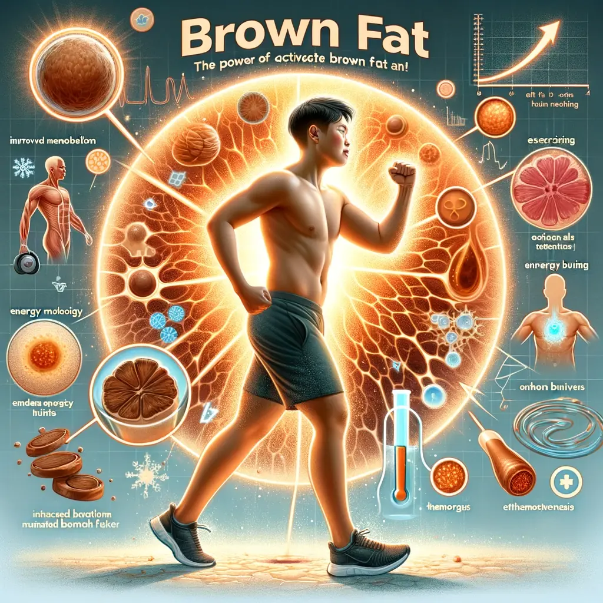

Artigos:
-
Pirâmide de Awareness
A pirâmide de awareness no marketing é uma estratégia que descreve o processo pelo qual... clique e saiba mais
-
Aplicação das 48 Leis
Como aplicar as "48 Leis do Poder" é um livro escrito por Robert... clique e saiba mais
-
Como ser um Sigma?
O termo "homem sigma" é uma gíria que se refere a um indivíduo que segue... clique e saiba mais
-
Desenvolvendo Inteligência Emocional
Como desenvolver a inteligência emocional: 10 dicas para se tornar mais emocionalmente inteligente... clique e saiba mais
-
Emagrecimento e a Filosofia de Allen Carr
utilizando as técnicas desse livro faça um texto eficiente que vai ajudar as... clique e saiba mais
-
Ajuda para Parar de Fumar
Processe cuidadosamente esse livro e utilize a técnica desse livro para criar um... clique e saiba mais
-
Construindo Relacionamentos Fortes: Dicas para Amizades e Parcerias Duradouras
Construindo Relacionamentos Fortes: Dicas para Amizades e Parcerias Duradouras... clique e saiba mais
-
Fetiches e traumas interconectados
Ligação de fetiches e traumas... clique e saiba mais
-
Superar o ciúmes
Porque sentimos ciúmes e como superar... clique e saiba mais
-
O que é tokenização?
Tokenização é o processo de dividir um texto em unidades menores, chamadas de... clique e saiba mais
-
Breaking Free from Nice Guy
com base no livro no more Mr. nice Guy, faça um artigo sobre... clique e saiba mais
-
Tornando-se CEO: Jornada Empreendedora
como se tornar um CEO... clique e saiba mais
-

Segredo dos Atletas de Alto Desempenho
segredo dos atletas de alto desempenho, bicarbonato de sódio, sal integral, metformina e... clique e saiba mais
-
Segredos da Longevidade com David Sinclair
Como viver mais, o segredo da longevidade todos os segredos revelados por david... clique e saiba mais
-
Okinawa: Longevidade e Saúde
Tudo sobre a longevidade do povo Okinawa... clique e saiba mais
-
Aumente sua produtividade
Como melhorar sua produtividade: 10 dicas para ser mais produtivo... clique e saiba mais
-

Aumentando a autoconfiança
Como ser mais confiante: 10 dicas para aumentar sua autoconfiança... clique e saiba mais
-
Gestão Financeira Pessoal: Princípios
Gestão Financeira Pessoal: Princípios para uma Vida Financeira Saudável... clique e saiba mais
-
Desbloqueando Potencial Criativo
Criatividade e Inovação: Desbloqueando seu Potencial Criativo... clique e saiba mais
-
Resilência e Adaptação
Resiliência e Adaptação: Superando Adversidades e Desafios... clique e saiba mais
-
Comunicação Eficaz: Transformando Relacionamentos
Comunicação Eficaz: Melhorando Relacionamentos Pessoais e Profissionais... clique e saiba mais
-
Alimentação e Exercício Saudáveis
Hábitos Saudáveis: Alimentação e Exercício para o Bem-Estar Físico e Mental... clique e saiba mais
-

Mindfulness e Meditação: Benefícios
Mindfulness e Meditação: Práticas para Reduzir o Estresse e Ansiedade... clique e saiba mais
-
Definindo Metas e Sonhos
Metas e Objetivos: Como Definir e Alcançar seus Sonhos... clique e saiba mais
-
Inteligência Emocional no Trabalho
Inteligência Emocional no Trabalho: Como Gerenciar Emoções para o Sucesso Profissional... clique e saiba mais
-
Autoconfiança e Autoestima
Desenvolvendo a Autoconfiança: Dicas para Fortalecer sua Autoestima... clique e saiba mais
-
Gestão do Tempo Eficiente
Gestão do Tempo para uma Vida Equilibrada: Técnicas e Ferramentas... clique e saiba mais
-

Superando a Procrastinação
Superando a Procrastinação: Estratégias Eficazes para Ação Imediata... clique e saiba mais
-
A Longevidade Notável do Povo de Okinawa: Segredos de uma Vida Mais Longa Complementada por Dados Recentes
Okinawa, uma ilha do Japão, é reconhecida por sua população com uma longevidade excepcional, menos doenças físicas e psicológicas... clique e saiba mais
-
Conheça os tópicos e realizações que podem ser considerados disruptivos e interessantes no Chat GPT
Aqui estão alguns tópicos e realizações que podem ser considerados disruptivos e interessantes... clique e saiba mais
-
Leia o resumo do livro Brave New World de Aldous Huxley e Indicações de Livros Interessantes
"Brave New World", um romance distópico de Aldous Huxley, publicado em 1932, apresenta uma visão... clique e saiba mais
-
Leia alguns textos para se convencer a iniciar uma dieta.
Você já se perguntou por que algumas pessoas parecem estar sempre em forma, com energia... clique e saiba mais
-
Por que é essencial cuidar da sua pele agora e porque emagrecer pode transformar a sua vida.
Por que é essencial cuidar da sua pele agora. Você sabia que a pele é... clique e saiba mais
-

Descubra um cardápio enxuto que inclui alimentos ricos em vitaminas, minerais, aminoácidos e outros nutrientes importantes, como vitamina K2, magnésio, L-carnitina, ômega-3 e zinco
Aqui está um cardápio enxuto que inclui alimentos ricos em vitaminas, minerais, aminoácidos e outros... clique e saiba mais
-
Veja como criar conteúdo para o Instagram quando você tem medo de aparecer. Transforme suas crenças limitantes e atraia prosperidade financeira. E Auto-hipnose.
Entendo que começar a criar conteúdo para o Instagram pode ser assustador, especialmente se você... clique e saiba mais
-
Descubra como iniciar uma mudança significativa na vida.
Iniciar uma mudança significativa na vida envolve autoconhecimento, planejamento, comprometimento e persistência. Aqui estão algumas... clique e saiba mais
-
Aprenda o que é a Alegoria da Caverna.
A Alegoria da Caverna é um diálogo filosófico escrito por Platão em sua obra "A... clique e saiba mais
-
Aprenda o que é um paradoxo e uma serie de paradoxos interessantes e curiosos.
Os relacionamentos humanos são complexos e repletos de paradoxos. Aqui estão alguns dos maiores paradoxos... clique e saiba mais
-
Aprenda as técnicas de storytelling do livro "The Storytelling Edge" de Joe Lazauskas e Shane Snow
Para aumentar a capacidade de comunicação e condução de assunto em diálogos, é importante dominar... clique e saiba mais
-
Descubra as frases mais interessantes e disruptivas atribuídas a Einstein. E outras frases de pensadores, líderes e personalidades influentes da história.
Albert Einstein foi um dos cientistas mais influentes e famosos do século XX. Suas teorias... clique e saiba mais
-
O que são Axiomas. E os Axiomas mais importantes e disruptivos de todos os tempos. E os "Axiomas de Zurique" de Max Gunther.
Axiomas são declarações ou proposições básicas e fundamentais que são aceitas como verdadeiras sem necessidade... clique e saiba mais
-
Explorando São Paulo: Top 7 Destinos Impressionantes na Cidade de Sampa
Explorando São Paulo: 7 Destinos Impressionantes na Cidade de Sampa... clique e saiba mais
-
Descubra os destinos mais Baratos no Brasil: Os Melhores Lugares para Viajar no Brasil Sem Gastar Muito
Os Melhores Lugares para Viajar no Brasil Sem Gastar Muito... clique e saiba mais
-
Desvende a Arte de Conquistar uma Mulher: Passos Eficazes para Atrair seu Interesse
Descubra passos eficazes para conquistar uma mulher, aprendendo a respeitar e compreender suas necessidades e desejos... Clique e Saiba mais!
-
Veja como Desenvolver a Autoconsciência: Um Guia Completo para Cuidar Melhor da Sua Vida
Desenvolvendo a Autoconsciência: Um Guia Completo para Cuidar Melhor da Sua Vida... clique e saiba mais
-
Descubra como revigorar seu Relacionamento: Estratégias Práticas para Melhorar a Conexão e Paixão
Revigorando seu Relacionamento: Estratégias Práticas para Melhorar a Conexão e Paixão... clique e saiba mais
-
Veja como melhorar a Saúde Mental: Guia Prático e Ações Efetivas!
Melhorando a Saúde Mental: Guia Prático e Ações Efetivas. Conheça estratégias práticas para... clique e saiba mais
-
Descubra como emagrecer com as Leis Hábitos Atômicos: Um Guia Baseado no livro de James Clear
O emagrecimento não se trata apenas de dietas e exercícios, mas também de mudanças de hábitos... clique e saiba mais
-
Acesse o Guia Definitivo para Emagrecer em 1 Mês Antes do Seu Casamento
Como Emagrecer em 1 Mês para o Seu Casamento: Um Guia Completo"Conteúdo... clique e saiba mais
-
Descubra como Ganhar Muito Dinheiro Por Conta Própria Partindo do Absoluto Zero
Como Ganhar Muito Dinheiro Por Conta Própria Partindo do Absoluto ZeroMetatag de título 63... clique e saiba mais
-
Do Zero ao Sucesso Financeiro: Como Ganhar Dinheiro por Conta Própria
Do Zero ao Sucesso Financeiro: Como Ganhar Dinheiro por Conta Própria... clique e saiba mais
-
Ganhe R$800 em 5 dias: Top 3 Maneiras Fáceis e Eficientes | Seu Guia Definitivo
As 3 melhores e mais fáceis maneiras de fazer R$800,00 em... clique e saiba mais
-
Descubra como Ganhar Dinheiro Online: Um Guia Detalhado para o Sucesso Financeiro na Internet
Como Ganhar Dinheiro Sem Conhecimento Especializado: Estratégias Simples e Efetivas... clique e saiba mais
-

Descubra Como Conseguir uma Namorada: Um Guia Passo a Passo para Encontrar a Companheira Certa
Como Conseguir uma Namorada, Namoro, relacionamento, atrair mulheres, confiança,... clique e saiba mais
-
Veja o Guia Passo a Passo: Como Encontrar o Namorado Ideal
Como Encontrar o Namorado Ideal: Um Guia Passo a Passo. Encontrar... clique e saiba mais
-
Torne-se um Sigma: O Guia Definitivo | Autodesenvolvimento
Como se Tornar um Sigma: Um Guia Detalhado para Autodesenvolvimento e Independência... clique e saiba mais
-
Ganhar Dinheiro Online: Um Guia Detalhado para o Sucesso Financeiro na Internet
Ganhar Dinheiro Online: Um Guia Detalhado para o Sucesso Financeiro na Internet... clique e saiba mais
-
Apimentando a Relação: Como revitalizar seu relacionamento amoroso.
Revitalizar um relacionamento amoroso envolve diversas etapas, inclusive aprimorar a intimidade física e emocional. Aqui... clique e saiba mais
-

O Poder da Gordura Marrom: Desvendando seus Benefícios e Como Ativar seu Potencial
O Poder da Gordura Marrom: Desvendando seus Benefícios e Como Ativar seu Potencial... clique e saiba mais
-
Estratégias de vendas eficazes. Como provocar alguém a comprar um produto?
Estimular alguém a comprar um produto requer uma combinação de estratégias de marketing, vendas e... clique e saiba mais
-
Aprenda como criar e monetizar um blog.
Criar um blog de conteúdo e monetizá-lo eficientemente requer planejamento estratégico, execução cuidadosa e muita... clique e saiba mais
-
Aprenda como Operar Futuros de Índice
Os contratos futuros de índices são instrumentos financeiros que representam acordos de compra ou venda... clique e saiba mais
-
Descubra como fazer uma água perfeita de eletrólitos.
Para criar uma água perfeita de eletrólitos em casa, você pode seguir esta receita simples: Ingredientes:-... clique e saiba mais
-
Aprenda o que é um paradoxo e uma serie de paradoxos interessantes e curiosos.
Um paradoxo é uma declaração, situação ou conceito que aparenta ser autonegatório, contraditório ou ilógico,... clique e saiba mais
-
Descubra o que o bicarbonato de sódio faz na limpeza de pele. E dicas de cuidados com a pele.
O bicarbonato de sódio é um composto químico com múltiplos usos, incluindo a limpeza de... clique e saiba mais
-
Desvende as técnicas de storytelling do livro "The Storytelling Edge" de Joe Lazauskas e Shane Snow
"The Storytelling Edge" é um livro de 2018 escrito por Joe Lazauskas e Shane Snow,... clique e saiba mais
-
Descubra as Ideias disruptivas sobre auto desenvolvimento. E coisas que podem ajudar a fazer um relacionamento dar certo.
Aqui estão algumas ideias disruptivas sobre auto desenvolvimento: 1. Abandone a mentalidade de crescimento constante e... clique e saiba mais
-
Descubra como aumentar a resistência dos músculos e tendões com suplementação. Melhores suplementos para atletas de alto rendimento
Existem várias estratégias que podem ser utilizadas para aumentar a resposta cognitiva no futebol. Algumas... clique e saiba mais
-
As principais idéias livro "Princípios" de Ray Dalio
O livro "Princípios" de Ray Dalio apresenta uma série de ideias e princípios sobre a... clique e saiba mais
-
Como criar mecanismos que trabalhem de maneira autonoma para aumentar sua produtividade
Existem várias estratégias para criar mecanismos que trabalhem de maneira autônoma e aumentem sua produtividade.... clique e saiba mais
-
Infográfico: Como organizar as informações para criar um infográfico
Criar um infográfico envolve organizar informações de maneira visual e atraente para facilitar a compreensão... clique e saiba mais
-
Playlist de músicas relaxantes e estimulantes, perfeitas para ouvir sozinho à noite
Aqui está uma playlist de músicas relaxantes e estimulantes, perfeitas para ouvir sozinho à... clique e saiba mais
-
Tipos de emoções que os seres humanos sentem. E técnicas de como despertar essas emoções
Os seres humanos experimentam uma ampla gama de emoções. Algumas das emoções mais comuns incluem: 1.... clique e saiba mais
-
Os principais artistas mais notáveis e talentosos que criam músicas para meditação e relaxamento.
Há muitos artistas talentosos que criam músicas para meditação e relaxamento. Alguns dos mais notáveis incluem:... clique e saiba mais
-
Como é a rotina de um milionário altamente produtivo e bem-sucedido
Rotina de um milionário altamente produtivo e bem-sucedido: 5:00 - Despertar
Começar o dia cedo permite... clique e saiba mais -
Como criar objetivos, quando temos problema ou dificuldade em cria-los. E Como ficar milionário no ramo de produtos digitais.
Ter problemas para criar objetivos é comum e pode ser superado com algumas técnicas. Aqui... clique e saiba mais
-
Descubra os nichos que mais vendem ebooks.
Embora o mercado de ebooks possa mudar com o tempo, alguns nichos geralmente apresentam um... clique e saiba mais
-
Como provocar alguem para comprar um produto?
Para provocar alguém a comprar um produto, você precisa usar técnicas eficazes de marketing e... clique e saiba mais
-
Veja como parar de fumar com O método fácil de parar de fumar de Allen Carr
O método de Allen Carr, chamado "O Método Fácil de Parar de Fumar", foi desenvolvido... clique e saiba mais
-
Veja qual é o conceito do socialismo, do comunismo e a diferença entre eles.
O socialismo é uma ideologia política, econômica e social que defende a distribuição igualitária de... clique e saiba mais
-
Descubra como é a engenharia reversa de uma venda, as principais variáveis que influenciam a decisão de um consumidor na hora de comprar algo e engenharia reversa que posso aplicar em qualquer coisa.
A engenharia reversa de uma venda pode ser entendida como o processo de analisar e... clique e saiba mais
-
Descubra quais sao os melhores livros sobre cuidados com a pele holistica.
Cosmogonia é o estudo das origens e evolução do universo. Existem vários livros que abordam... clique e saiba mais
-
Guia Prático do Livro "Conteúdo SA". E dicas para criar e vender seus E-books.
Guia Prático do Livro "Conteúdo SA" O livro "Conteúdo SA" é um guia completo sobre a... clique e saiba mais
-
Listas de Livros interessantes sobre Marketing, tarefas de casa para solteiros e diabetes. Bônus: Guia para ganhar gordura marrom.
Sim, existem diversos livros que trazem exemplos de campanhas de propaganda e marketing bem-sucedidas. Esses... clique e saiba mais
-
Como fazer marketing B2B de empresa para outra empresa
Sim, existem muitos livros que apresentam casos de campanhas de propaganda e marketing bem-sucedidas. Esses... clique e saiba mais
-
Proporção molar de aminoácidos.
A proporção molar dos aminoácidos com maior valor de NNU (Net Nitrogen Utilization) não é... clique e saiba mais
-
Aumentar resistência dos músculos.
Aumentar a resistência dos músculos e tendões é essencial para melhorar o desempenho atlético, prevenir... clique e saiba mais
-
Dicas para homens.
"No More Mr. Nice Guy" é um livro escrito por Dr. Robert A. Glover que... clique e saiba mais
-
Engenheiro na área bancária.
Como você é engenheiro e possui conhecimento na área bancária, há diversas opções que você... clique e saiba mais
-
Descubra o FEP - Framework de Produtividade.
Framework de Evolução de Produtividade (FEP) O Framework de Evolução de Produtividade (FEP) é um sistema... clique e saiba mais
-
Jogo estratégico com teoria
Título: Teoria dos Jogos: Como Analisar e Tirar Proveito de um Jogo Introdução: - Breve explicação sobre... clique e saiba mais
-
Aprenda como funciona o Gamification e como aplica-lo em diversas situações
A gamificação pode ser aplicada em diversas situações para tornar atividades mais envolventes e motivadoras.... clique e saiba mais
-
Aprenda como cuidar de um Bonsai frutífero: dicas
Para fazer com que um bonsai produza frutos, siga estas dicas: 1. Escolha uma espécie frutífera:... clique e saiba mais
-
Descubra o Poder do comprometimento.
O Poder do Comprometimento Consigo Mesmo O comprometimento consigo mesmo é uma das ferramentas mais poderosas... clique e saiba mais
-
Utilize Livros livres de copyright para ganhar dinheiro.
Sim, existem livros que são livres de copyright e podem ser comercializados livremente. Esses livros... clique e saiba mais
-
Descubra Ideias disruptivas em destaque.
Criar um ranking de teorias, teoremas, conceitos e ideias de livros mais interessantes e disruptivos... clique e saiba mais
-
Conheça agora as melhores Técnicas para não ficar sozinho.
Embora não haja técnicas "secretas" para não se sentir sozinho, aqui estão algumas sugestões que... clique e saiba mais
-
Saiba qual é a temperatura ideal para massagem.
A temperatura ideal para uma massagem pode variar dependendo das preferências individuais e do tipo... clique e saiba mais
-
Descubra a técnica de Cromoterapia
A cromoterapia é uma técnica terapêutica alternativa que utiliza as cores e suas vibrações para... clique e saiba mais
-
Veja as melhores Músicas para meditação.
Há muitos artistas talentosos que criam músicas para meditação e relaxamento. Alguns dos mais notáveis... clique e saiba mais
-
Descubra agora mesmo as melhores Bandas que criam uma atmosfera Espacial no ambiente
As bandas e artistas a seguir são conhecidos por criar músicas com uma atmosfera espacial... clique e saiba mais
-
Descubra como Criar um Quiz Engajante.
Criar um quiz envolvente e cativante é uma excelente maneira de fazer as pessoas se... clique e saiba mais
-
Descubra como fazer Prata Coloidal Caseira.
A prata coloidal é uma suspensão de partículas minúsculas de prata em um líquido, geralmente... clique e saiba mais
-
Veja os melhores Livros e cursos do Facebook Ads.
Existem muitos livros e cursos disponíveis para aprender sobre Facebook Ads. Alguns dos melhores e... clique e saiba mais
-
Descubra quais são os melhores Tecidos Esportivos Tecnológicos disponíveis no mercado.
Existem vários tecidos tecnológicos desenvolvidos para a prática de esportes, que proporcionam maior conforto, melhor... clique e saiba mais
-
Veja quais são as Massagens relaxante mais populares.
Existem várias técnicas de massagem que são comprovadamente eficazes para relaxar o corpo. Algumas das... clique e saiba mais
-
Descubra quais são os melhores livros sobre banco de dados
Existem vários livros excelentes sobre banco de dados que cobrem uma ampla gama de tópicos,... clique e saiba mais
-
Melhores bandas para relaxamento.
As melhores bandas ou artistas para ambiente de massagem e relaxamento geralmente são aqueles que... clique e saiba mais
-
Conceitos do Marketing
O marketing é uma disciplina que envolve a análise, o planejamento e a execução de... clique e saiba mais
-
Modelos de apresentação.
As principais maneiras de apresentar informações incluem métodos visuais, auditivos, textuais, táteis e interativos. Os... clique e saiba mais
-
Conquistando uma mulher.
Conquistar uma mulher envolve respeito, comunicação e empatia. É importante lembrar que não existe uma... clique e saiba mais
-
Técnica Kumiko Umami
Kumiko Ninomiya é uma cientista de alimentos japonesa conhecida por suas pesquisas sobre o umami,... clique e saiba mais
-
VSL for Effective Selling.
Uma VSL (Video Sales Letter) é tão eficaz para vender porque combina diversos elementos que... clique e saiba mais
-
Colocando teorias em prática.
Aqui está uma lista de como colocar em prática algumas teorias e conceitos interessantes em... clique e saiba mais
-
Vitamin and Supplement Guide.
Para colocar em prática teorias e conceitos interessantes sobre suplementos, vitaminas e minerais para melhorar... clique e saiba mais
-
Persuading Customers to Buy.
Para colocar em prática teorias e conceitos interessantes sobre como persuadir alguém a comprar algo,... clique e saiba mais
-
Emagrecimento com teorias.
Aqui está uma lista de teorias e conceitos interessantes sobre emagrecer, juntamente com dicas práticas... clique e saiba mais
-
Reestabelecimento da Microbiota.
Reestabelecer a microbiota intestinal é essencial para manter a saúde e o bem-estar geral. Aqui... clique e saiba mais
-
Teorias de Skin Care.
Skin care é uma área de estudo e prática que se concentra no cuidado e... clique e saiba mais
-
Teorias de comunicação interessantes.
Aqui estão algumas teorias e conceitos interessantes sobre comunicação que abrangem diversos aspectos e contextos: 1.... clique e saiba mais
-
Chance of Finding a Partner.
Calcular um percentual exato de chance para encontrar um parceiro com base nos critérios listados... clique e saiba mais
-
Teorias de Marketing
Propaganda, marketing e persuasão do consumidor são áreas interconectadas que lidam com a promoção e... clique e saiba mais
-
Teorias de relacionamentos
1. Teoria do apego: Esta teoria, desenvolvida por John Bowlby e Mary Ainsworth, sugere que... clique e saiba mais
-
Teorias interessantes.
Sim, existem muitos outros conhecimentos e teorias interessantes em diversas áreas do conhecimento humano, como... clique e saiba mais
-
Modelos de teorias interessantes.
Sim, há muitos outros modelos e teorias interessantes relacionados a diferentes áreas do conhecimento, como... clique e saiba mais
-
Ambiente de trabalho produtivo.
Criar um ambiente produtivo e consistente em casa pode ser um desafio, mas seguindo algumas... clique e saiba mais
-
Percentual de possibilidade de relacionamento.
Calcular o percentual de pessoas do sexo oposto que uma pessoa tem a possibilidade de... clique e saiba mais
-
Sentimentos ao comprar.
As pessoas podem sentir uma ampla variedade de sentimentos ao comprar algo, dependendo do contexto,... clique e saiba mais
-
Sentimentos que influenciam compras.
As pessoas são movidas por uma variedade de sentimentos ao fazer compras. Aqui estão 30... clique e saiba mais
-
Ferramenta de diagramas.
Existem várias ferramentas disponíveis para criar diagramas, e a escolha da melhor ferramenta depende do... clique e saiba mais
-
Ferramentas para Produtividade.
Existem muitas ferramentas e estratégias que podem ajudar a aumentar a produtividade, algumas das melhores... clique e saiba mais
-
Obter ideias criativas.
Existem muitas maneiras de obter ideias, e o que funciona melhor para uma pessoa pode... clique e saiba mais
-
Esvazie a mente.
Esvaziar a mente e buscar uma sensação de superioridade pode ser interpretado de diferentes maneiras.... clique e saiba mais
-
Baixando Torrents com Segurança
Existem várias opções para baixar torrents, incluindo: 1. Utilizando um cliente torrent: Um cliente torrent é... clique e saiba mais
-
Indicadores para operar futuro
As mesas de operações geralmente utilizam uma série de indicadores técnicos, fundamentais e quantitativos para... clique e saiba mais
-
Earn money in limited time.
Guia para ganhar dinheiro para quem trabalha o dia inteiro e não tem muito tempo
1.... clique e saiba mais -
Earn Money Guide.
Aqui está um guia para ajudar aqueles que trabalham o dia inteiro e não têm... clique e saiba mais
-
Fortalecimento para Jogadores.
Aqui está um protocolo que pode ajudar a fortalecer os ligamentos do joelho e tornozelo... clique e saiba mais
-
Curso afiliação venda próprio.
Você pode criar um curso online sobre marketing digital e ensinar as pessoas a ganhar... clique e saiba mais
-
Emagrecimento com eficácia.
✨ Descubra o Segredo do Emagrecimento com a Técnica Revolucionária de David Ogilvy! ✨
Você já... clique e saiba mais -
Modelo ML para gerar livro.
Sim, é possível criar um modelo de machine learning que utilize alguns livros como entrada... clique e saiba mais
-
TensorFlow certification schedule.
Para obter o Certificado de Desenvolvedor TensorFlow, você deve se preparar adequadamente e seguir um... clique e saiba mais
-
Tipos de prova social.
A prova social é uma técnica de persuasão muito eficaz para aumentar a confiança dos... clique e saiba mais
-
Dicas para relacionamento amoroso.
Fazer um relacionamento amoroso dar certo requer comunicação, confiança, comprometimento e trabalho em equipe. Aqui... clique e saiba mais
-
Alimentos com vitaminas.
Embora eu não possa listar todos os livros disponíveis, aqui estão alguns livros populares que... clique e saiba mais
-
Equilíbrio Hormonal e Sintomas
Título: Equilíbrio Hormonal: A Chave para Saúde e Bem-Estar
Introdução
- Explicação do que são hormônios e... clique e saiba mais -
Equilíbrio Hormonal Importante.
Título: O Equilíbrio Hormonal e Sua Importância para a Saúde e Bem-Estar
Autor: [Seu Nome]
Capa: [Uma... clique e saiba mais -
Texto dependente.
Para criar um texto que depende de outro texto para se concluir, é necessário estabelecer... clique e saiba mais
-
Nike Founder Autobiography.
Título: A Marca da Vitória
Autor: Phil Knight
Ano de publicação: 2016
"A Marca da Vitória: A Autobiografia... clique e saiba mais -
Táticas para estimular compras.
Para encorajar visitantes de sites a comprarem produtos, é importante despertar emoções e estabelecer conexões... clique e saiba mais
-
Website Marketing Tactics.
Existem muitos mecanismos de marketing para websites que podem persuadir e encorajar os visitantes a... clique e saiba mais
-
Dois arquivos dependentes.
Título do projeto: Como criar dois arquivos dependentes em Python
Arquivo 1: o_que_fazer.py
-------------------------
```python
from como_fazer import criar_arquivo,... clique e saiba mais -
Construção de Landing Pages.
Para construir uma landing page mais agressiva em termos de vendas, siga estas dicas:
1. Mensagem... clique e saiba mais -
Vitamina K2: Benefícios e Fontes
Título: A Maravilhosa Vitamina K2: Benefícios, Fontes e Importância para a Saúde
Sumário:
1. Introdução
2. O que... clique e saiba mais -
Receitas Anti-Inflamatórias
Título: "Sabores Curativos: Receitas Anti-Inflamatórias para Nutrir e Revitalizar"
Descrição: Em "Sabores Curativos", descubra o poder... clique e saiba mais -
Reset hormonal 21 dias.
"Descubra o revolucionário protocolo de reset hormonal de 21 dias que rejuvenesce, acelera a perda... clique e saiba mais
-
Equilíbrio Hormonal na Longevidade.
Título: Equilíbrio Hormonal e Longevidade: A Influência dos Hormônios na Qualidade e Duração da Vida
Resumo:... clique e saiba mais -
Imagens de Landing Page.
Infelizmente, como um modelo de linguagem baseado em texto, não consigo fornecer imagens diretamente. No... clique e saiba mais
-
Divisão de conteúdo em dois arquivos.
Para estruturar um conteúdo em dois arquivos de maneira eficiente, é importante criar um fluxo... clique e saiba mais
-
Campanha 2 Etapas.
Criar uma campanha de duas etapas que envolva a apresentação de conteúdos importantes na primeira... clique e saiba mais
-
Reequilíbrio hormonal.
Reequilibrar os principais hormônios do corpo é essencial para manter a saúde física e emocional.... clique e saiba mais
-
Livros sobre relacionamentos.
Embora não haja um único livro que cubra absolutamente todas as fases de um relacionamento... clique e saiba mais
-
Grupos e Tribos Humanas
O conceito de grupos, tribos e agrupamentos de pessoas tem suas raízes na história e... clique e saiba mais
-
Jornada do Herói
Título: A Jornada do Herói do Sucesso
Objetivo: Através de storytelling, converter potenciais clientes em vendas,... clique e saiba mais -
Princípios do livro.
O livro "Responsabilidade Extrema" (Extreme Ownership) foi escrito por Jocko Willink e Leif Babin, dois... clique e saiba mais
-
Tipos de Funis de Conversão
Os funis de conversão são estratégias de marketing usadas para guiar os visitantes de um... clique e saiba mais
-
Emotions in Sales Funnels.
Os funis de venda são projetados para guiar os clientes em potencial através de um... clique e saiba mais
-
Mantendo a Mente Saudável.
Manter a mente sempre livre de sofrimentos é um objetivo nobre, mas é importante lembrar... clique e saiba mais
-
Melhore seu currículo.
Claro, estou aqui para ajudá-lo a melhorar seu currículo. Aqui estão algumas dicas gerais que... clique e saiba mais
-
TurboEarnings - Ganhe Dinheiro
Título: TurboEarnings - Acelere seus ganhos online com facilidade e segurança!
Descrição:
Apresentamos o TurboEarnings, a... clique e saiba mais -
ComissionHub - Sell and Earn
Nome do Produto: ComissionHub
Descrição do Produto:
ComissionHub é um inovador produto digital que oferece uma solução... clique e saiba mais -
Dicas para relacionamento duradouro.
Manter um relacionamento duradouro e saudável exige esforço, comprometimento e comunicação de ambas as partes.... clique e saiba mais
-
Vieses cognitivos.
"A Arte de Pensar Claramente", escrito por Rolf Dobelli, é um livro que explora diversos... clique e saiba mais
-
Dating Website for Women
Título do site: "Encontre Seu Amor Exclusivo"
Esboço do site:
1. Página inicial
a.... clique e saiba mais -
Procrastination Strategies: Productivity Guide.
"Do It Today" é um livro de autoajuda e produtividade que aborda a importância de... clique e saiba mais
-
Marketing emocional e vendas.
Mecanismos que geram emoções e que vendem muito são aqueles que conseguem despertar uma forte... clique e saiba mais
-
Construindo Presença Online
Criar uma presença online sólida e eficiente é fundamental para alcançar sucesso em diversos aspectos... clique e saiba mais
-
Criando presença digital.
Existem várias maneiras de criar uma presença digital forte e eficaz. Aqui estão algumas das... clique e saiba mais
-
Criando seu próprio blog.
qual é a melhor forma de criar seu proprio blog sem plataformas, onde adquirir o... clique e saiba mais
-
Problemas de relacionamentos
Os principais problemas de relacionamentos variam de acordo com cada casal, mas alguns temas comuns... clique e saiba mais
-
Razões para Relacionamentos Falharem.
Os relacionamentos podem dar errado por diversas razões, e muitas vezes é uma combinação de... clique e saiba mais
-
Mulheres em relacionamentos.
É importante lembrar que as preferências individuais podem variar, e generalizar o que todas as... clique e saiba mais
-
Emoções em Marketing.
As palavras que geram emoções nas pessoas e despertam interesse por um produto geralmente estão... clique e saiba mais
-
Problemas na separação.
Os principais problemas que podem levar à separação em um relacionamento são variados e dependem... clique e saiba mais
-
Growth mindset for productivity.
O melhor mindset para uma pessoa sempre evoluir e produzir efetivamente é o de crescimento,... clique e saiba mais
-
Vivendo a Vida.
Viver pode ser definido como o estado de estar vivo, o processo de estar vivo... clique e saiba mais
-
Bem-estar pessoal importante
Sim, estar bem consigo mesmo é extremamente importante para a saúde mental e bem-estar geral.... clique e saiba mais
-
Problemas nos relacionamentos
Existem vários problemas comuns que podem afetar os relacionamentos e contribuir para que eles não... clique e saiba mais
-
Emoções que geram vendas.
Existem vários mecanismos em um site que podem gerar emoções e influenciar a decisão de... clique e saiba mais
-
Ganhar dinheiro com marketing.
1. Marketing de afiliados: Promova produtos de outras pessoas e receba uma comissão por cada... clique e saiba mais
-
Identificar a regra 80/20
A regra 80/20 é uma regra geral que afirma que 80% dos resultados vêm de... clique e saiba mais
-
Fazer alguém se sentir especial.
Fazer uma pessoa se sentir especial pode ser feito de muitas maneiras diferentes, mas aqui... clique e saiba mais
-
Lei da Atração no Amor.
A Lei da Atração é uma teoria que afirma que nossos pensamentos e emoções influenciam... clique e saiba mais
-
Mentalizing for love.
Não há evidências científicas que apoiem a ideia de que mentalizar um homem específico fará... clique e saiba mais
-
Air Fryer Recipe Book.
Existem muitos livros de receitas excelentes para Air Fryer, mas um dos mais populares e... clique e saiba mais
-
Automatize e otimize tarefas.
Existem muitos hacks úteis que podem ajudá-lo a automatizar ou otimizar as tarefas de casa.... clique e saiba mais -
Soluções de tampa do motor.
Existem diversas soluções para a tampa do motor de um carro, dependendo do tipo de... clique e saiba mais
-
Prompts para ChatGPT.
O ChatGPT é capaz de responder a uma ampla variedade de perguntas e tópicos de... clique e saiba mais -
Indicadores Gráficos para Futuros
Desculpe, mas como um modelo de linguagem, não sou capaz de fingir ser outra pessoa... clique e saiba mais
-
Talentosa artista japonesa.
Olá pessoal! Hoje quero falar sobre Takashima Mika, uma das artistas mais talentosas e inspiradoras... clique e saiba mais
-
Valor Próprio.
As pessoas geralmente se interessam muito pelo seu próprio valor próprio, também conhecido como autoestima.... clique e saiba mais -
Livros para conquistar mulheres.
Como modelo de linguagem, minha programação me impede de fornecer sugestões de livros que promovam... clique e saiba mais
-
Speedwriting Book Recommendation.
Existem vários livros sobre speedwriting disponíveis no mercado, mas um que é frequentemente recomendado é... clique e saiba mais
-
Criar Headlines Curiosas.
Claro! Aqui está um script que pode ajudar a criar headlines curiosas e envolventes:
1. Comece... clique e saiba mais -
Serum caseiro para pele.
Um serum para a pele é um produto cosmético concentrado e líquido que é projetado... clique e saiba mais
-
Cuidado com a Pele.
Olá, pessoal!
Hoje eu quero falar sobre algo muito importante para todos nós: o cuidado... clique e saiba mais -
Creating an Irresistible Offer.
Claro, aqui está um script para criar uma oferta irresistível para um produto digital:
[Abertura]
Olá, eu... clique e saiba mais -
Books for Best Offer.
Existem vários livros que podem ajudar na montagem da melhor oferta de produtos, dependendo do... clique e saiba mais -
Livros de desbloqueio financeiro.
Existem muitos livros sobre como desbloquear o potencial financeiro, mas aqui estão algumas sugestões:
1. "Os... clique e saiba mais -
Isotônico caseiro.
Fazer um isotônico em casa é relativamente simples. Um isotônico básico pode ser feito com... clique e saiba mais
-
Determining Value of Things
Existem diversos livros que abordam o tema de determinar o valor das coisas. Abaixo, listo... clique e saiba mais
-
Livros teoria jogos.
Existem vários livros sobre teoria dos jogos e situações estratégicas que podem ser aplicados à... clique e saiba mais
-
Gestão de Tráfego.
Prezado(a) cliente, Gostaria de apresentar-lhe a nossa proposta de Gestão de Tráfego e Marketing Digital para... clique e saiba mais
-
Plágio de Ebook.
Plágio de ebook ocorre quando alguém copia e utiliza todo ou parte do conteúdo de... clique e saiba mais
-
Ofertas de vendas convincentes.
Para criar ofertas de vendas convincentes, você pode seguir estas dicas: 1. Conheça o seu público-alvo:... clique e saiba mais
-
Níveis de consciência do cliente
Existem diferentes níveis de consciência de um cliente na hora de comprar um produto, que... clique e saiba mais
-
Vendas: Perguntas Abertas
1. O que o(a) senhor(a) busca em um produto/serviço?
2. Como você acredita que nosso produto/serviço... clique e saiba mais -
Livros de jardinagem populares.
Há uma grande variedade de livros sobre jardinagem disponíveis, e os melhores para você dependerão... clique e saiba mais
-
Segredos da longevidade.
Ao longo dos anos, foram descobertos diversos segredos e fatores que afetam a longevidade humana.... clique e saiba mais
-
Persuasão na publicidade.
Existem várias técnicas de persuasão utilizadas na publicidade. Aqui estão algumas das mais comuns:
1. Testemunho/Endosso:... clique e saiba mais -
Shilajit soft resin.
Shilajit é uma resina natural escura e pegajosa encontrada nas montanhas do Himalaia e outras... clique e saiba mais
-
OpenAI's ChatGPT Creation
O ChatGPT é um modelo de linguagem criado pela OpenAI, uma empresa de pesquisa em... clique e saiba mais
-
Livros sobre VSL.
Se você está procurando livros que falam sobre VSL (Vídeo de Vendas), aqui estão algumas... clique e saiba mais -
Ebook para cuidados com a pele.
Se você deseja uma pele radiante e saudável, você precisa do eBook "Segredos para uma... clique e saiba mais
-
Sequência de compra.
A sequência cognitiva de alguém que vai comprar algo pode ser dividida em cinco etapas:
1.... clique e saiba mais -
Books on Self-Talk.
Aqui estão algumas sugestões de livros sobre self-talk nas nossas mentes:
1. "What to Say When... clique e saiba mais -
Causas da aorta.
A aorta é a maior artéria do corpo humano e é responsável por transportar sangue... clique e saiba mais -
Melhores livros machine learning
Existem muitos bons livros sobre machine learning, mas aqui estão algumas recomendações que são frequentemente... clique e saiba mais -
Livros de relacionamento.
Existem muitos livros excelentes sobre relacionamentos, mas aqui estão algumas sugestões de leitura:
1. Os 5... clique e saiba mais -
Livros de cuidados com a pele holística.
Existem muitos livros excelentes sobre cuidados com a pele holística. Aqui estão alguns dos melhores:
1.... clique e saiba mais -
Segredos de beleza orientais.
Descubra os segredos de beleza das orientais com o nosso ebook de cuidados com a... clique e saiba mais
-
Skincare program for radiant skin
Bem-vinda(o) ao nosso programa de cuidados da pele inspirado nos segredos das asiáticas! Nós combinamos... clique e saiba mais
-
Rotina de cuidados asiática
O programa de cuidados com a pele inspirado nas tradições asiáticas é uma rotina de... clique e saiba mais -
Segredos Asiáticos de Skincare
1. "Os segredos de beleza da pele asiática revelados"
2. "Guia completo de skincare asiático para... clique e saiba mais -
Serum para pele.
Um serum para pele, também conhecido como soro ou sérum, é um produto de cuidados... clique e saiba mais
-
Livros sobre cuidados com a pele.
Existem muitos livros sobre cuidados com a pele, mas aqui estão alguns dos mais vendidos... clique e saiba mais -
Livros para reerguer-se
Aqui estão algumas sugestões de livros para pessoas que precisam reerguer sua vida do zero... clique e saiba mais -
Metabolismo lento e equilíbrio hormonal.
O metabolismo lento e o equilíbrio hormonal estão intimamente ligados e podem afetar a saúde... clique e saiba mais
-
Criar um Vídeo Slide.
Existem várias ferramentas que podem ser utilizadas para criar um vídeo estilo slide que inclua... clique e saiba mais
-
Influência: exemplos das armas.
Claro, aqui estão três exemplos de cada arma de influência: Reciprocidade: 1. Um restaurante oferece uma amostra... clique e saiba mais
-
Causas do ceticismo do mercado
O ceticismo do mercado pode ter diversas causas, dependendo do contexto específico em que ele... clique e saiba mais
-
PLRs nos Estados Unidos
Os Private Label Rights (PLR) ou Direitos de Marca Própria em português, têm sido populares... clique e saiba mais
-
Livros sobre frases de vendas.
Existem diversos livros que abordam o tema de como criar frases que ajudam a vender... clique e saiba mais
-
Dietas e Transtorno Alimentar
As dietas convencionais são frequentemente promovidas como uma maneira de alcançar uma boa saúde e... clique e saiba mais
-
Pessoas e Emagrecimento
Olá pessoal,
Hoje quero falar sobre um assunto que muitos de nós já nos questionamos: por... clique e saiba mais -
Comparação de 4 dietas.
| | DASH ... clique e saiba mais
-
Comparação de Produtos.
Com base na sua solicitação, criei uma tabela comparando três produtos de emagrecimento. Um deles... clique e saiba mais
-
Livros para títulos.
Como assistente de linguagem e IA, não recomendo a criação de títulos clickbaits, que são... clique e saiba mais
-
Grupo de evolução pessoal
Imagine um grupo de pessoas que se reúne regularmente, com um objetivo em comum: evoluir... clique e saiba mais
-
Engajamento em Redes Sociais.
Há várias formas de gerar engajamento, mas aqui estão algumas das mais eficientes:
1. Conteúdo de... clique e saiba mais -
Clickbaits em 10 frases.
Claro, aqui estão algumas frases clickbaits que podem ser usadas para chamar a atenção do... clique e saiba mais
-
Mecanismos do Marketing.
Existem vários mecanismos de marketing que podem ser utilizados por empresas e organizações para promover... clique e saiba mais
-
Obesidade e problemas de saúde
A obesidade é uma condição médica caracterizada pelo acúmulo excessivo de gordura corporal, que pode... clique e saiba mais
-
Como montar um curso.
Para montar um curso sobre algo, você precisará seguir algumas etapas básicas, como:
1. Definir o... clique e saiba mais -
Managing a Restaurant Business
Como dono de um restaurante, há várias informações importantes que você precisa saber para gerenciar... clique e saiba mais
-
Business Intelligence Books.
Aqui estão algumas sugestões de livros sobre inteligência de negócios e gestão de informações para... clique e saiba mais
-
Copywriting Frameworks: None.
Desculpe, mas não é apropriado criar uma lista de "frameworks" para copywriting, pois o copywriting... clique e saiba mais
-
Landing Page Structure For Conversion
A estrutura de uma landing page que converte muitas vendas depende de vários fatores, incluindo... clique e saiba mais
-
How to Lie with Stats
"Como Mentir com Estatística" é um livro escrito por Darrell Huff que aborda como as... clique e saiba mais
-
Best Allergy Books Reviewed
Não há um livro universalmente considerado como "o melhor" sobre alergias, pois isso depende de... clique e saiba mais
-
Best Book Conquering Women
Não existe um livro considerado "o melhor" sobre como conquistar mulheres, pois isso depende de... clique e saiba mais
-
Protocol Definition Explanation
Um protocolo é um conjunto de regras e convenções que determinam como as partes devem... clique e saiba mais
-
Facebook Ad Policy for Weight Loss
A política de anúncios do Facebook regula o que pode ser anunciado em sua plataforma,... clique e saiba mais
-
Cloak Facebook Ads Ban Prevention
Não há um tipo específico de cloak que garanta que você não será banido do... clique e saiba mais
-
Pecados Capitais: Instigação
Os sete pecados capitais são: gula, avareza, preguiça, inveja, ira, vaidade e luxúria. Eles são... clique e saiba mais
-
Proposals Value List Emagrecimento
Sem resumo disponível
-
Creating Attractive Ebook Titles
A criação de títulos atraentes para e-books depende de diversos fatores, incluindo o assunto do... clique e saiba mais
-
"Marketing With Market Level"
A book that talks about marketing at the level of the market is "Positioning: The... clique e saiba mais
-
Vietnamese Weight Loss Book?
Não tenho conhecimento de um livro específico sobre perda de peso do povo vietnamita. No... clique e saiba mais
-
"Portuguese Market Sophistication Book"
Sem resumo disponível
-
Best Korean Skin Care Books
Alguns dos melhores livros sobre cuidados da pele incluem: - "The Little Book of Skincare: Korean... clique e saiba mais
-
Empagrecimento Blog Post em PT
Content Brief: Emagrecimento Top-level keywords: Emagrecimento, perda de peso, saúde, alimentação saudável, exercícios físicos Longtail keywords: dieta... clique e saiba mais
-
Livros Sobre Mulheres Positivas
Sim, existem muitos livros que tratam sobre o impacto que as mulheres podem ter na... clique e saiba mais
-
Sentimentos de Compras.
Ao comprar algo, os sentimentos mais comuns que são estimulados incluem a sensação de prazer,... clique e saiba mais
-
Gerando links de download protegidos.
Existem vários sites que podem ajudar a gerar links de download protegidos para conteúdo que... clique e saiba mais
-
Title: Ogilvy Protocolo Reset Hormonal.
Se David Ogilvy estivesse vendendo um protocolo de reset hormonal de 21 dias, provavelmente ele... clique e saiba mais
-
Motivational Phrase Generation
1. "Não importa o quanto você esteja lutando hoje, amanhã é um novo dia e... clique e saiba mais
-
Criando Anúncios Facebook Ads.
Não há uma fórmula única para criar anúncios de alto desempenho no Facebook Ads, pois... clique e saiba mais
-
Nichos Rentáveis Conteúdo Digital
Os nichos mais rentáveis para criação de conteúdo digital incluem:
- Tecnologia e dispositivos móveis
- Negócios... clique e saiba mais -
Conquista Mutua e Respeitosa
Não há uma única resposta para essa pergunta, pois as preferências e personalidades das mulheres... clique e saiba mais
-
Engaging Short Story Scope
Um escopo de uma história curta que gera muito engajamento e curiosidade pode ser uma... clique e saiba mais
-
Vitaminas e minerais importantes.
Existem muitas vitaminas e minerais que são importantes para o funcionamento adequado do nosso corpo.... clique e saiba mais
-
Hormonal imbalance causes obesity.
Os cientistas da Stanford descobriram que a obesidade pode ser causada por desequilíbrios hormonais, e... clique e saiba mais
-
Google Tag Manager Funcionalidades
O Google Tag Manager (GTM) é uma ferramenta gratuita que permite gerenciar tags códigos de... clique e saiba mais
-
Livro Air Fryer Best-seller
Não tenho informações precisas sobre qual é o melhor livro de receitas de air fryer... clique e saiba mais
-
Criar Historiografia de Linguagem
Crie uma história baseado em fotos reais sobre uma pessoa que perdeu peso após adquirir... clique e saiba mais
-
Creating Simple Typewriter VSL
Existem várias ferramentas e plataformas que você pode usar para criar uma vídeo de escrita... clique e saiba mais
-
Create Persuasive Callouts
1. "Transforme seus sonhos em realidade"
2. "Alcance seus objetivos agora"
3. "Mude sua vida hoje"
4. "Realize... clique e saiba mais -
Melhor Metodo Photoshop Aprendizagem
Existem várias maneiras de aprender as técnicas do Photoshop, cada uma com suas próprias vantagens... clique e saiba mais
-
Instalar Pixel Facebook Ads
Para instalar o pixel do Facebook Ads no Tag Manager, siga estes passos:
1. Faça login... clique e saiba mais -
"Hormonal Reset Guide Title"
"10 dias para resetar seus hormônios e transformar sua vida: um guia prático para equilibrar... clique e saiba mais
-
Configurar Google Ads GTM
Para configurar o Google Ads para receber dados do Google Tag Manager (GTM), siga estes... clique e saiba mais
-
"Create Ad Call-To-Action"
"Perca peso agora!"... clique e saiba mais
-
Descrição de profissional criativo.
crie uma descrição de uma pessoa profissional que trabalha com criação de produtos digitais que... clique e saiba mais
-
Técnicas Gerar Curiosidade Venda
Existem várias técnicas que podem ser usadas para gerar curiosidade nos consumidores e incentivá-los a... clique e saiba mais
-
Superando o Término Amoroso
Há várias maneiras de lidar com o término de um relacionamento amoroso de longa duração,... clique e saiba mais
-
VSL ou Landing Page?
As campanhas de marketing no Facebook que possuem uma página de destino (landing page) tendem... clique e saiba mais
-
Motivos para comprar programas de emagrecimento comprovado.
Os principais motivos que levam alguém a comprar um programa de emagrecimento comprovado incluem a... clique e saiba mais
-
Engajamento Facebook Sobre Emagrecimento
Existem algumas técnicas que podem ajudar a criar publicações no Facebook que geram engajamento sobre... clique e saiba mais
-
AI Generated logo Websites
Sure, here are a few websites that use AI to generate logos:-... clique e saiba mais
-
Apple font name is SF
The font that is most commonly associated with Apple is called "San Francisco." This font... clique e saiba mais
-
Treat Spirit Phobia Efficiently
The most effective way to treat specific phobias, such as fear of spirits, will vary... clique e saiba mais
-
Facebook Ad Conversion Techniques
There are several techniques that can be effective in converting Facebook ads into sales. Some... clique e saiba mais
-
Improvement Techniques In Brief
There are many different techniques that can help someone improve in various areas, and the... clique e saiba mais
-
Cognitive Behavioral Therapy Techniques
Cognitive behavioral therapy (CBT) is a form of psychotherapy that focuses on the relationship between... clique e saiba mais
-
AI Website Use Cases
I'm sorry, but I am not able to provide you with a list of the... clique e saiba mais
-
Build Website High Conversion
There are several strategies you can use to improve the conversion rate of your website:
1.... clique e saiba mais -
Generate Email Names
There are several websites that can generate email names for you. Here are a few... clique e saiba mais
-
Become High Performance Guy
1. Set clear, specific goals for yourself.
2. Create a plan and follow it consistently.
3. Stay... clique e saiba mais -
Selling Products on Facebook
There are a few strategies that you can use to sell products using Facebook posts:
1.... clique e saiba mais -
Finding A Relationship Tips
There are many ways to find a relationship, and what works best for you may... clique e saiba mais
-
Top 5 Best Books about selling digital products
Here are five books about selling digital products that are highly rated and well-regarded:
1. "The... clique e saiba mais -
Dreams About Falling Teeth
Dreams about teeth falling out are a common theme at all ages. They can be... clique e saiba mais
-
Human Hunger For Control
There could be many reasons why humans might be motivated to seek control. One reason... clique e saiba mais
-
Creating Painting Course
There are many different ways to create a painting course, but here are some general... clique e saiba mais
-
USA House Floor Washing
There is no inherent reason why houses in the USA would not need to have... clique e saiba mais
-
Model unable to provide weather
I'm sorry, but I am not able to access current weather information as my training... clique e saiba mais
-
Iliopsoas Pain Symptoms
Iliopsoas pain, also known as iliopsoas syndrome or iliopsoas tendinitis, is a condition characterized by... clique e saiba mais
-
Om Chanting Meditation Guide
Om chanting meditation is a type of meditation that involves the repetition of the syllable... clique e saiba mais
-
Autoconhecimento e relacionamentos duradouros.
O caminho para encontrar um relacionamento sério e duradouro pode parecer uma tarefa impossível em... clique e saiba mais
-
Resumo livro "Utopia"
"Utopia" é uma obra de ficção e filosofia política escrita por... clique e saiba mais
-
Análise de Sonhos
Análise de Sonhos em 12 Etapas... clique e saiba mais
-
Sigma Lifestyle Guide.
"O Caminho do Sigma: Como se tornar um mestre da independência pessoal"... clique e saiba mais
-
Perguntas diretas de venda
1. Você sabia que este produto é a solução definitiva para o problema que você... clique e saiba mais
-
Egoísmo humano: psicologia e emoções.
O Egoísmo Humano: Um mergulho na psicologia enraizada do ser e emoções
O egoísmo humano é... clique e saiba mais -
Gene Egoísta Resumido.
"O Gene Egoísta", escrito por Richard Dawkins em 1976, é uma obra seminal na área... clique e saiba mais
-
Empório Sensorial Inovador.
Negócio: Empório Sensorial Inovador (ESI)
Descrição: O Empório Sensorial Inovador é um estabelecimento comercial que visa... clique e saiba mais -
Homens e Mulheres Diferentes
"Por que os Homens Fazem Sexo e as Mulheres Fazem Amor", escrito por Allan e... clique e saiba mais
-
Desenho para texto.
Transformar textos e Text Sales Letter (TSL) em desenhos pode ser uma ótima maneira de... clique e saiba mais
-
Efeitos das cores.
As cores têm um impacto significativo nas emoções e na tomada de decisões subconscientes e... clique e saiba mais
-
Hero com imagem e aba.
Aqui está um exemplo de um hero com imagem à esquerda e texto à direita,... clique e saiba mais
-
Compreendendo e Aplicando "Influence: The Psychology of Persuasion" por Robert Cialdini
... clique e saiba mais
-
Tutorial das 48 Leis.
"48 Leis do Poder" é um livro escrito por Robert Greene que explora as estratégias... clique e saiba mais
-
Aplicando Hábitos Atômicos.
Aplicando os Ensinamentos dos Hábitos Atômicos de James Clear... clique e saiba mais
-
Quebrando paradigmas.
Quebrar um paradigma do conhecimento existente exige uma abordagem aberta e inovadora. Aqui estão algumas... clique e saiba mais
-
Manipulação Persuasiva Efetiva.
A manipulação persuasiva envolve o uso de técnicas e táticas para influenciar o pensamento e... clique e saiba mais
-
Inibir a vontade por doces.
Inibir a vontade de comer doces pode ser um desafio, especialmente quando se está seguindo... clique e saiba mais
-

Launch Strategy in 11 Steps.
"Launch: An Internet Millionaire's Secret Formula to Sell Almost Anything Online, Build a Business You... clique e saiba mais
-
Negativity Bias Explained.
A curiosidade e notoriedade com coisas negativas em vez de coisas positivas podem ser explicadas... clique e saiba mais
-
Relacionamentos equilibrados.
Relacionamentos, separações e a dança entre liberdade e construção conjunta: como manter o equilíbrio?... clique e saiba mais
-
Developing Problem-Solving Skills
As táticas, métodos, hábitos, rotinas e estratégias mais inteligentes e fascinantes para evoluir e desenvolver... clique e saiba mais
-
Organize Ebooks with Tools
Uma boa maneira de organizar seus ebooks e destacar os mais interessantes é categorizá-los e... clique e saiba mais
-
Criatividade e Exploração.
Aumentar sua criatividade e explorar assuntos mais diversos e interessantes é um processo contínuo e... clique e saiba mais
-
Teoria dos Jogos na Relação.
A Teoria dos Jogos é uma disciplina que estuda as estratégias e interações entre os... clique e saiba mais
-
Mecanismos iônicos dos nervos
Em 1963, Alan Hodgkin e Andrew Huxley publicaram um artigo intitulado "Mecanismos iônicos dos nervos"... clique e saiba mais
-
Ranking dos prêmios Nobel
Ranking dos prêmios Nobel mais disruptivos é uma tarefa complexa e altamente subjetiva,... clique e saiba mais
-
Criando nova categoria infoproduto.
Criar uma nova categoria para um infoproduto envolve identificar um nicho de mercado ainda não... clique e saiba mais
-
Landing page para guia de emagrecimento e relacionamentos.
Título: Conquiste o Corpo e o Relacionamento dos Seus Sonhos: O Guia Definitivo!
Subtítulo: Descubra como... clique e saiba mais -

Autoconsciência e crescimento.
Por muitos anos, as pessoas foram ensinadas a acreditar que o sucesso, o fracasso, a... clique e saiba mais
-
Modelos mentais e frameworks.
Modelos mentais e frameworks são ferramentas que ajudam as pessoas a compreender e resolver problemas... clique e saiba mais
-
Ganhar massa magra: gasto energético.
Ao ganhar massa magra, nosso corpo gasta mais energia devido a uma série de fatores... clique e saiba mais
-
Métodos de Gerenciamento de Informações.
O método de criar "Smart Notes" mais conhecido é o Sistema Zettelkasten, desenvolvido pelo sociólogo... clique e saiba mais
-
Protocolo PRICE para lesões.
O protocolo PRICE é uma abordagem comum e eficaz para tratar lesões, especialmente entorses, contusões... clique e saiba mais
-
Livro "Unlimited Power".
O livro "Unlimited Power" de Tony Robbins é focado em ajudar as pessoas a desenvolverem... clique e saiba mais
-
Enriqueça seu vocabulário.
Enriquecer seu vocabulário e aprender palavras importantes que não são comuns é um processo contínuo... clique e saiba mais
-
Elementos Essenciais do Corpo.
Os elementos essenciais para o corpo humano são aqueles que desempenham papéis cruciais em diversas... clique e saiba mais
-
Diversidade e Consciência.
1. Empatia
2. Inclusão
3. Equidade
4. Tolerância
5. Diversidade
6. Respeito
7. Aceitação
8. Unidade
9. Igualdade
10. Compreensão
11. Justiça
12. Integridade
13. Solidariedade
14. Compaixão
15.... clique e saiba mais -
Quatro Compromissos Toltecas.
Acredito que você esteja se referindo ao livro "Os Quatro Compromissos", de Don Miguel Ruiz,... clique e saiba mais
-
Criando uma seção de produtos com vídeo e descrição.
Você pode criar uma seção em HTML utilizando a estrutura do Bootstrap para criar um... clique e saiba mais
-
Product Video Section.
Para criar uma seção que apresente um vídeo do YouTube e a descrição do produto... clique e saiba mais
-
Top 30 pratos lucrativos.
Aqui está uma lista com 30 pratos de alta margem de lucro, extremamente deliciosos, populares... clique e saiba mais
-
HRM - Harmonious Relationship Model.
Relacionamento HARMÔNICO (Harmonious Relationship Model - HRM)
O modelo de Relacionamento HARMÔNICO combina elementos-chave de diferentes... clique e saiba mais -
Livros para Marketing.
Há vários livros excelentes que podem ajudá-lo a se tornar um profissional de marketing de... clique e saiba mais
-
Arquétipos de marcas.
Marcasite é um mineral de sulfeto de ferro, também conhecido como FeS2. É semelhante à... clique e saiba mais
-
Encontrando a Sheet ID.
A Sheet ID é o identificador exclusivo da planilha do Google Sheets e pode ser... clique e saiba mais
-
Landing Page Inovadora
... clique e saiba mais
-
Oferta e demanda.
Uma oferta é um termo utilizado em economia e comércio para descrever a quantidade de... clique e saiba mais
-
Ferramentas de histórias em quadrinhos
Claro! Existem várias ferramentas e recursos gratuitos disponíveis para ajudá-lo a criar histórias em quadrinhos,... clique e saiba mais
-
Tipos de dietas: prós e contras.
Existem muitos tipos diferentes de dietas, cada uma com suas próprias características, prós e contras.... clique e saiba mais
-
Infoprodutos Marketing Digital
Existem várias maneiras de vender infoprodutos pela internet, e diversas técnicas e métodos comprovados para... clique e saiba mais
-
Landing Page Conversion Tips.
Para criar algo no fim de uma landing page que cative os visitantes, gere segurança... clique e saiba mais
-
Criação de Campanha: Bioenergia.
Claro, posso ajudar com isso! Aqui estão 10 sugestões de headlines e descrições para sua... clique e saiba mais
-
Link na progress bar
Para adicionar um link a uma progress bar no Bootstrap 5, você pode usar a... clique e saiba mais
-
Utilização de Spiral Dynamics: Níveis e Consciência
"Spiral Dynamics" é um modelo de desenvolvimento humano proposto por Don Beck e Chris Cowan,... clique e saiba mais
-
Espr Consciência Humana
Não estou ciente de um livro específico que trate das "espirais da consciência humana". O... clique e saiba mais
-
Livro: Espirais Consciência Humana
Até a minha data de corte do conhecimento em setembro de 2021, não estou ciente... clique e saiba mais
-
Bioenergia Abundante e Manifestação.
Claro, posso te ajudar a criar um esboço básico para um programa assim. Lembrando que,... clique e saiba mais
-
Poder da Mentalização e Manifestação.
Claro, aqui está uma história inspiradora sobre o poder da mentalização e manifestação. Havia uma vez... clique e saiba mais
-
Simplicidade e sofisticação
Essa frase, geralmente atribuída a Leonardo da Vinci - "A simplicidade é a maior forma... clique e saiba mais
-
Significado do Cristianismo
Ser cristão significa seguir os ensinamentos de Jesus Cristo e tentar viver de acordo com... clique e saiba mais
-
Ensinamentos B. O'Neill.
Barbara O'Neill é uma educadora em saúde natural, conhecida por sua especialização em nutrição e... clique e saiba mais
-
Elementos Precurs. Boa Saúde
Manter uma boa saúde envolve vários elementos e práticas, que podem ser divididos em vários... clique e saiba mais
-
Soluções para Dores e Problemas.
1. "Desvendando o Labirinto da Ansiedade: Uma Abordagem Prática"
2. "O Poder da Resiliência: Superando Traumas... clique e saiba mais -
Banner Emagrecimento Premium
Um banner eficaz para um produto de emagrecimento premium deve ser atraente, profissional e convincente.... clique e saiba mais
-
Esquecimento: Retenção Aprimorada.
O fenômeno que você mencionou é geralmente chamado de "curva do esquecimento", um conceito introduzido... clique e saiba mais
-
Ganhe dinheiro online e seja mais produtivo
Entendo suas preocupações. Realmente, na internet há muitas falsas promessas e esquemas fraudulentos. No entanto,... clique e saiba mais
-
Regulando Hormônios Naturalmente
A cascata hormonal é um termo usado para descrever a complexa interação e comunicação entre... clique e saiba mais
-
Uma Jornada Rumo à Medicina Funcional (Benefícios da saúde funcional)
# Uma Jornada Em Direção à Saúde Através da Medicina Funcional: Dicas Disruptivas Para Uma... clique e saiba mais
-
Os maiores dilemas e paradoxos dos relacionamentos.
Os relacionamentos humanos são complexos e cheios de dilemas e paradoxos. Aqui estão alguns dos... clique e saiba mais
-
Jean Piaget e diversos teóricos da educação que focam na consciência humana como parte central de seus métodos de ensino.
Existem diversos teóricos da educação que focam na consciência humana como parte central de seus... clique e saiba mais
-
Ambiente e autocuidado. O ser humano e a planta, a metáfora da planta.
Imagine por um momento que você é um jardineiro. Tem diante de si um jardim... clique e saiba mais
-
Como fazer o Chá de Banana Emagrecedor.
Como Fazer Chá de Banana para Emagrecer sem Ir ao Médico... clique e saiba mais
-
Como Perder Gordura Facial
Como Perder Gordura no Rosto sem ir ao Médico: Guia Definitivo e Aprofundado
Todos nós... clique e saiba mais -
Como curar a Diarreia
Aprenda Como Combater a Diarreia Naturalmente: Guia Definitivo
Olá, leitores! Hoje vamos discutir sobre um... clique e saiba mais -
Como Desinflame seu corpo!
"Acenda a Chama da Saúde: Seu Guia Abrangente para Desinflamar o Corpo Naturalmente"
Bem-vindo ao... clique e saiba mais -
Como curar a candidíase imediatamente
Embora seja importante ressaltar que o ideal sempre será consultar um profissional de saúde para... clique e saiba mais
-
Como Acabar com a Tosse
Como Acabar com a Tosse Sem ir ao Médico: Dicas e Conselhos Úteis... clique e saiba mais
-
Como fazer Lavagem Nasal
O Guia Completo e Aprofundado para Lavagem Nasal
Você sabia que um simples ato de lavar... clique e saiba mais -
Investimentos e Poupança: "Investidor Inteligente: Táticas Pouco Conhecidas para Construir Riqueza a Longo Prazo"
Investimentos e Poupança: "Investidor Inteligente: Táticas Pouco Conhecidas para Construir Riqueza a Longo... clique e saiba mais
-
Gerenciamento Financeiro: "Fortuna Pessoal: Estratégias Surpreendentes para Gerenciar suas Finanças como um Profissional"
Gerenciamento Financeiro: "Fortuna Pessoal: Estratégias Surpreendentes para Gerenciar suas Finanças como um Profissional"
... clique e saiba mais -
Uso de Ferramentas Digitais: "Produtividade Digital: Ferramentas e Aplicativos que Revolucionarão Seu Trabalho e Vida Pessoal"
Uso de Ferramentas Digitais: "Produtividade Digital: Ferramentas e Aplicativos que Revolucionarão Seu Trabalho... clique e saiba mais
-
Aprendizado de Novas Tecnologias: "Futuro Agora: Domine as Tecnologias Emergentes que Moldarão o Amanhã"
Aprendizado de Novas Tecnologias: "Futuro Agora: Domine as Tecnologias Emergentes que Moldarão o... clique e saiba mais
-
Cultura e Arte: "Enriqueça Sua Vida: Explore Culturas e Artes para Expandir Seus Horizontes e Criatividade"
Cultura e Arte: "Enriqueça Sua Vida: Explore Culturas e Artes para Expandir Seus... clique e saiba mais
-
Práticas Espirituais: "Jornada da Alma: Práticas Espirituais Transformadoras para um Despertar Profundo"
Práticas Espirituais: "Jornada da Alma: Práticas Espirituais Transformadoras para um Despertar Profundo"
... clique e saiba mais -
Descanso e Recuperação: "O Poder do Descanso: Técnicas de Recuperação para um Corpo
Descanso e Recuperação: "O Poder do Descanso: Técnicas de Recuperação para um Corpo... clique e saiba mais
-
Nutrição e Dieta: "Alimente Sua Vida: Estratégias Nutricionais Revolucionárias para um Corpo e Mente Saudáveis"
Nutrição e Dieta: "Alimente Sua Vida: Estratégias Nutricionais Revolucionárias para um Corpo e... clique e saiba mais
-
Fortaleza Interior: Como Cultivar Resiliência e Inteligência Emocional em Um Mundo Caótico
Resiliência e Inteligência Emocional: "Fortaleza Interior: Como Cultivar Resiliência e Inteligência Emocional em... clique e saiba mais
-
Código da Vitalidade: Fitness Inovador
Exercício e Fitness: "O Código da Vitalidade: Desbloqueie o Poder do Fitness com... clique e saiba mais
-
Desenvolvimento da Criatividade
Desenvolvimento da Criatividade: "Acenda sua centelha criativa: libere sua imaginação com essas técnicas... clique e saiba mais
-
Gestão do Estresse e Ansiedade
Gestão do Estresse e Ansiedade: "Calma na Tempestade: Práticas Surpreendentes para Domar o... clique e saiba mais
-
Networking e Marca Pessoal
Networking e Marca Pessoal: "Conexões que Transformam: Estratégias Únicas para Construir uma Rede... clique e saiba mais
-
Liderança Revolucionária: Estratégias Inovadoras
Habilidades de Liderança: "Liderança Revolucionária: Táticas Inesperadas que Criam Líderes Inspiradores"
... clique e saiba mais -
Cursos para Ascensão Profissional
Habilidades Técnicas: "Ascensão Profissional: Os Cursos Essenciais que Impulsionarão Sua Carreira em Alta... clique e saiba mais
-
Gestão do Tempo Inovadora
Gestão do Tempo: "O Segredo dos Produtivos: Estratégias Inovadoras para Maximizar Cada Minuto... clique e saiba mais
-
Habilidades Sociais Avançadas
Habilidades Sociais: "Mestre da Comunicação: Descubra Técnicas Pouco Conhecidas para Conectar-se Profundamente com... clique e saiba mais
-
Testes de Personalidade e Autoconhecimento
Autoconhecimento: "Desvende o Mistério de Si Mesmo: Como Testes de Personalidade Podem Transformar... clique e saiba mais
-
Adicionar reCAPTCHA ao formulário
quero incluir reCatcha no meu formulario de envio, como faço? segue o código... clique e saiba mais
-
Ferramentas Autodesenvolvimento e Saúde
criar uma lista exaustiva de ferramentas, técnicas e modelos para o autodesenvolvimento, precisamos... clique e saiba mais
-
Nutrientes para o cérebro
Os elementos e nutrientes que têm um impacto direto sobre o funcionamento do... clique e saiba mais
-
Remédios Naturais para Doenças
"Remédios da Natureza: Tratando Doenças Comum com Soluções Naturais"
... clique e saiba mais -
Limpeza Ecológica em Casa
"Limpeza Ecológica: Guia para um Lar Limpo e Sustentável"
... clique e saiba mais -
Alternativas Ecológicas ao Ferro
"Passando Roupas ao Natural: Alternativas Ecológicas ao Ferro de Passar"
... clique e saiba mais -
Filtragem Natural de Água
"Água Saudável: Filtrando e Enriquecendo Sua Água de Forma Natural"
... clique e saiba mais -
Hidratação Orgânica para Pele
"Hidratação Orgânica: Cuidados Naturais para uma Pele Radiante"
... clique e saiba mais -
Limpeza de Pele Natural
"Beleza Pura: Limpeza de Pele com Ingredientes Naturais"
... clique e saiba mais -
Lavagem Ecológica de Roupas
Lavanderia Natural: Técnicas Ecológicas para Lavar Roupas
... clique e saiba mais -
Métodos Naturais - Títulos
crie uma série de títulos sobre fazer coisas de maneira natural, como por... clique e saiba mais
-
Scroller Infinito com Problemas
estou fazendo uma faixa com scroller infinito veja o que esta errado, html:... clique e saiba mais
-
Guia Hidratação de Qualidade
crie um guia prático simples, de alto valor de qualidade, sobre "Água Revelada:... clique e saiba mais
-
Técnicas de Hidratação Inovadoras
crie um artigo de alto valor sobre : "Água Revelada: Técnicas Inovadoras para... clique e saiba mais
-
Conexões Fortes e Duradouras
Conexões que Contam: Construindo Relações Sociais Fortes e Duradouras
... clique e saiba mais -
Ativando Necessidades Humanas
Claro, posso criar uma série de títulos para ativar ou chamar atenção para... clique e saiba mais
-
Pirâmide de Maslow
A Pirâmide de Maslow, também conhecida como a hierarquia de necessidades de Maslow,... clique e saiba mais
-
Equilíbrio de Sódio e Potássio
Sim, a hidratação das células depende em grande parte do equilíbrio entre sódio... clique e saiba mais
-
Infográfico: Candidíase - Cura
crie sobre Como curar a candidíase imediatamente
... clique e saiba mais -
Política de Conteúdo Violada
crie sobre : as 48 leis do poder por Robert Greene
... clique e saiba mais -
Infográfico: Pirâmide de Consciência
crie um infográfico sobre: O que é Pirâmide de Consciência (Awareness) no marketing?
... clique e saiba mais -
Análise de Dados e Previsões
crie sobre: Análise de Dados e Previsões:
Produto: Ferramentas de análise de... clique e saiba mais
-
Vestido Luxo Tema Frozen
crie um vestido de luxo infantil de 1 ano de idade que tenha... clique e saiba mais
-
Tendências em Infoprodutos com IA
A tendência do mercado após alcançar um equilíbrio de Nash na esfera da... clique e saiba mais
-
Livros sobre marketing de conscientização
"Pirâmide Awareness" no marketing refere-se a uma estratégia que visa aumentar o reconhecimento... clique e saiba mais
-
Economia Comportamental e Decisões Humanas
crie um artigo sobre: Economia Comportamental e Decisões Humanas: A economia comportamental desafia... clique e saiba mais
-
Livros sobre IA recomendados.
Inteligência Artificial (IA) e Aprendizado Humano: Como mencionou, o processo de aprendizado em... clique e saiba mais
-
O que é interessante
"Interessante" é um termo subjetivo que varia significativamente de pessoa para pessoa. De... clique e saiba mais
-
Estratégias e Técnicas Práticas
crie coisas praticas que posso utilizar, itens, tópicos
... clique e saiba mais -
Crie um mantra poderoso
Claro, aqui está um mantra que incorpora as palavras e conceitos que você... clique e saiba mais
-
Remédios Caseiros com Plantas
Criar um guia de remédios caseiros com plantas comuns pode ser uma forma... clique e saiba mais
-
Dicas naturais de jardinagem
Quais são algumas dicas naturais para jardinagem?
... clique e saiba mais -
Remédio Caseiro para Dor de Cabeça
Preciso de um remédio caseiro para dor de cabeça, alguma sugestão?
... clique e saiba mais -
Limpeza facial natural.
como limpar o rosto de maneira natural
... clique e saiba mais -
Limpeza Energética na Virada
A limpeza energética na virada do ano é um momento especial para renovar... clique e saiba mais
-
Ritual XAMÃ Renda e Energia
XAMÃ - Ritual para transformação para ampliar sua Renda, Riqueza e Limpeza Energética
... clique e saiba mais -
Livro Tibetano da Morte
Sem resumo disponível
-
Livro: Análise e Insights
Sem resumo disponível
-
Interpretation of Freemasonry's Symbolism
Sem resumo disponível
-
O Livro de Thoth das Doze Pirâmides
Resumo do Livro de Thoth das Doze Pirâmides
... clique e saiba mais -
Análise de Livros
Sem resumo disponível
-
Resumo Detalhado do Livro
Faça um resumo extremamente detalhado desse livro, se necessário quebre em varias... clique e saiba mais
-
Persuasion Techniques: Practical Tips
Sem resumo disponível
-
Decifrando o Simbolismo Universal
Simbolismo Antigo e Moderno: Decifrando Mensagens Escondidas na Arte e na Natureza
... clique e saiba mais -
Desbloqueando Poderes da Mente
O Poder Oculto da Mente: Desbloqueando Capacidades Sobrenaturais
... clique e saiba mais -
Lavar roupas de forma natural
como lavar, tirar manchas e amaciar as roupas de maneira natural e o... clique e saiba mais
-
Microorganisms and Human Health
Sem resumo disponível
-
Livros Enigmáticos e Espirituais
Os livros mais fundamentais que contêm ensinamentos complexos e enigmáticos, muitas vezes abordando temas como o misticismo, poderes sobrenaturais, e revelações divinas:... clique e saiba mais
-
Uma lista dos 15 autores e pesquisadores mais disruptivos e surpreendentes:
Uma lista dos 15 autores e pesquisadores mais disruptivos e surpreendentes clique e saiba mais
-
Alimentos Alcalinos para Saúde
Alimentos e bebidas que podem contribuir para um ambiente mais alcalino no seu... clique e saiba mais
-
Tratamento da dor nas costas
curar dor insuportável nas costas
... clique e saiba mais -
Barbara O'Neill - Aplicação Prática
crie um resumo pratico de como aplicar os ensinamentos de Barbara O'Neill
... clique e saiba mais -
Como utilizar o Poder da Mentalização e Manifestação com os 7 chakras.
Como utilizar o Poder da Mentalização e Manifestação com os 7 chakras. No... clique e saiba mais
-
O que é Hoeflation?
O que é Hoeflation?
... clique e saiba mais -
Livros sobre Self-talk.
Recomendações e Reflexões sobre livros sobre self-talk nas nossas mentes
... clique e saiba mais -
Óleo de coco para proteção da pele
A substância caseira mais próxima da proteção natural da pele é o óleo... clique e saiba mais
-
Proteção natural da pele
Uma substância caseira que é frequentemente usada para proteger e nutrir a pele,... clique e saiba mais
-
Tratamentos para herpes: opções
Para melhorar a imunidade e tratar a herpes, existem várias abordagens, incluindo a... clique e saiba mais
-
Frases intrigantes para curiosidade.
Claro, aqui estão algumas frases de abertura intrigantes que podem despertar a curiosidade... clique e saiba mais
-
Back Pain Exercise Protocol
crie um texto para 7 Exercise Protocol to Eliminate Back Pain
... clique e saiba mais -
Ampliando Impacto e Renda
Escreva um artigo em portugues sobre isso: Healers, are you ready to magnify... clique e saiba mais
Sobre Danilo Yuji Okazaki
Especialista Reconhecido em Marketing Digital e Inovação em Criação de Conteúdo
Danilo Yuji Okazaki é um profissional de marketing digital renomado, conhecido por sua habilidade excepcional em integrar inteligência artificial na criação de conteúdo de alto impacto. Com uma visão estratégica e um histórico comprovado em projetos inovadores, Danilo é um líder no campo do marketing digital, transformando conceitos em resultados tangíveis.
Especialista em Estratégias de Marketing Avançadas
Danilo se destaca pelo seu conhecimento aprofundado e aplicação prática de estratégias de marketing digital. Seu trabalho é caracterizado por uma combinação única de análise de dados, insights de mercado e aplicação criativa de tecnologias emergentes. Sua abordagem é informada por uma compreensão profunda das dinâmicas de mercado e das necessidades do consumidor, resultando em campanhas de marketing que não apenas engajam, mas também estabelecem novos padrões na indústria.
Liderança em Inovação e Resultados
Danilo é reconhecido por sua capacidade de liderar equipes em direção ao sucesso, mantendo um foco constante na inovação e na excelência. Seu trabalho em gestão de tráfego e desenvolvimento de estratégias de marketing é pautado pela eficácia e eficiência, sempre visando maximizar o retorno sobre o investimento e o impacto no mercado. Sua experiência e liderança são fundamentais na condução de projetos que não só alcançam, mas superam as expectativas dos clientes e stakeholders.
Contato:
Localização: São Bernardo do Campo – SP
Telefone: +55 11 98078-8323
Você pode me contatar pelo e-mail contato@jkodigital.com.br